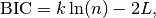
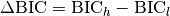
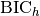
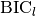
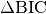
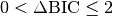
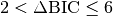
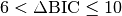
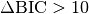

bayesian_info_criterion¶
-
astropy.stats.bayesian_info_criterion(log_likelihood, n_params, n_samples)[source] [edit on github]¶ Computes the Bayesian Information Criterion (BIC) given the log of the likelihood function evaluated at the estimated (or analytically derived) parameters, the number of parameters, and the number of samples.
The BIC is usually applied to decide whether increasing the number of free parameters (hence, increasing the model complexity) yields significantly better fittings. The decision is in favor of the model with the lowest BIC.
BIC is given as

in which
 is the sample size,
is the sample size,  is the number of free
parameters, and
is the number of free
parameters, and  is the log likelihood function of the model
evaluated at the maximum likelihood estimate (i. e., the parameters for
which L is maximized).
is the log likelihood function of the model
evaluated at the maximum likelihood estimate (i. e., the parameters for
which L is maximized).When comparing two models define , in which  is the higher BIC, and  is the lower BIC. The higher is  the stronger is the evidence against the model with higher BIC.
The general rule of thumb is:
: weak evidence that model low is better
: moderate evidence that model low is better
: strong evidence that model low is better
: very strong evidence that model low is better
For a detailed explanation, see [R36] - [R40].
Parameters: log_likelihood : float
Logarithm of the likelihood function of the model evaluated at the point of maxima (with respect to the parameter space).
n_params : int
Number of free parameters of the model, i.e., dimension of the parameter space.
n_samples : int
Number of observations.
Returns: bic : float
Bayesian Information Criterion.
References
[R36] (1, 2, 3) Richards, D. Maximum Likelihood Estimation and the Bayesian Information Criterion. <https://hea-www.harvard.edu/astrostat/Stat310_0910/dr_20100323_mle.pdf> [R37] Wikipedia. Bayesian Information Criterion. <https://en.wikipedia.org/wiki/Bayesian_information_criterion> [R38] Origin Lab. Comparing Two Fitting Functions. <http://www.originlab.com/doc/Origin-Help/PostFit-CompareFitFunc> [R39] Liddle, A. R. Information Criteria for Astrophysical Model Selection. 2008. <http://arxiv.org/pdf/astro-ph/0701113v2.pdf> [R40] (1, 2) Liddle, A. R. How many cosmological parameters? 2008. <http://arxiv.org/pdf/astro-ph/0401198v3.pdf> Examples
The following example was originally presented in [R36]. Consider a Gaussian model (mu, sigma) and a t-Student model (mu, sigma, delta). In addition, assume that the t model has presented a higher likelihood. The question that the BIC is proposed to answer is: “Is the increase in likelihood due to larger number of parameters?”
>>> from astropy.stats.info_theory import bayesian_info_criterion >>> lnL_g = -176.4 >>> lnL_t = -173.0 >>> n_params_g = 2 >>> n_params_t = 3 >>> n_samples = 100 >>> bic_g = bayesian_info_criterion(lnL_g, n_params_g, n_samples) >>> bic_t = bayesian_info_criterion(lnL_t, n_params_t, n_samples) >>> bic_g - bic_t 2.1948298140119391
Therefore, there exist a moderate evidence that the increasing in likelihood for t-Student model is due to the larger number of parameters.